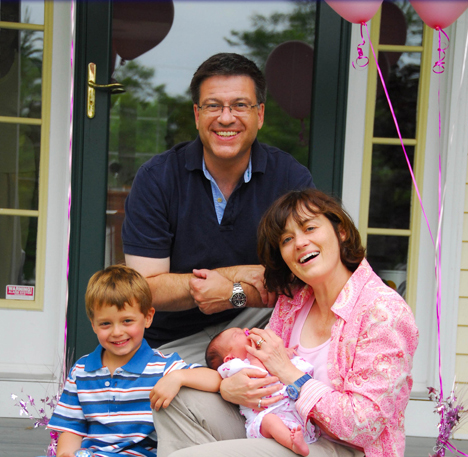
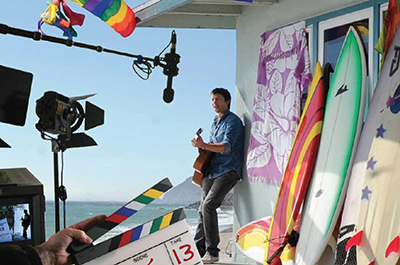
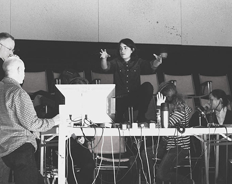
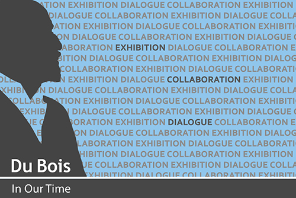
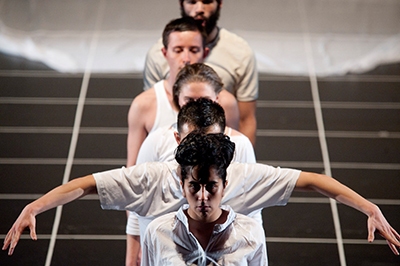
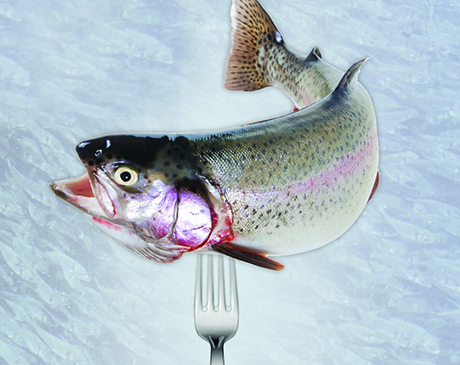
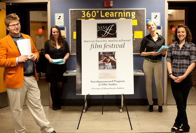
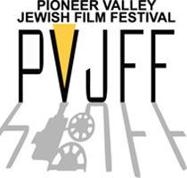

INTERNSHIPS AND JOBS
Crew Needed for April Shoot
Posted: 02/11/2015
The Department of French at Smith College. Oriane Morriet is organizing a FILM SHOOTING (in English) which will take place on APRIL 4th, 5th, 11th, 12th, 18th and 19th of 2015 and is looking for students or staff who would like to be a part of the project as MEMBERS OF THE FILM CREW.
Send an email to omorriet@smith.edu if interested!
Needed (the list is exhaustive and can work with less people):
-a producer
-a line producer
-a director
-a first assistant director
-a director of photography
-a first assistant camera
-a gaffer
-a lighting best boy
-a sound operator
-a perchman
-an operator
-an assistant operator
-a set designer
-an assistant set designer
-a costume designer
-a key make-up and hair artist
-a location manager
-a ripper
-a film editor
-a sound designer
Contact:
Oriane Morriet
omorriet@smith.edu
Internship at Full Circle Adoptions
Full Circle Adoptions is an adoption agency, whose main office is in Northampton, right on the bus line. The agency has a tradition of welcoming students from the local colleges as interns where they have an opportunity to learn about domestic infant adoptions and international adoption practice. We are accepting letters of interest, together with resumes, from students who’d like to apply to be interns in our program. Full Circle is a fully Hague accredited and licensed domestic adoption agency. We work with both expectant parents and prospective adoptive families nationwide. This internship position will cater to the student who is interested in learning what it is like to work at a non-profit and create the growth of a non-profit through film and social media. We are looking for a motivated and creative film student who will be part of creating a presence for the agency on the internet/social media and in our community. One possibility is airing your creations on NCTV and other area community television stations. Another possible area for your skills is creating films for the adoptive parents in our program. You will create short films documenting who the family is what they have to offer an adopted child. These films will be shared with expectant parents all over the country who are hoping to find a forever family for their child. There will be creative license in conjunction with guidance from the agency director and staff.
Interns are expected to commit to the highest degree of confidentiality and professionalism. Past interns have had projects including. Interns are expected to be very organized, detail-oriented and self-starters, and are expected to be able to articulate anything additional they would like to learn and what their creative process is. Email to let us know if you would like to be a part of our team as an intern in our outreach and social media department. This position is part-time and unpaid. We encourage you to talk with the appropriate office at your school about seeking college credit for the internship. You must make arrangements with your college to qualify.
Please email (only) a cover letter and resume to officemanager@fullcircleadoptions.com. The agency will contact applicants to arrange interviews. We look forward receiving your resume.
Internship: "Tan Cerca Tan Lejos. A Voice of Mexico in the USA"
"Tan Cerca Tan Lejos. A Voice of Mexico in the USA" is looking for an intern for the Fall 2014 semester.
Prefered Characteristics:
- Ability to transcribe audio interviews from Spanish into English and vice versa
- Ability to translate written interviews from Spanish into English and vice versa
- Ability to manage the webpage of the radio show
- Ability to meet deadlines
Expected amount of work: 10 hours per week
The main duties of the intern would be related with translating interviews but "Tan Cerca Tan Lejos..." is ABSOLUTELY OPEN to allow the intern to participate in all the aspects of radio creation, if he/she is willing to. It includes preproduction (reaching out to people, researching about the people we interview, writing drafts of the scripts of the interviews) production (leading interviews and being on the air) and postproduction (editing interviews in audio software). Furthermore: NO PRIOR EXPERIENCE IN RADIO PRODUCTION IS REQUIRED. We are looking for someone enthusiastic and engaged with our radio project. We are ABSOLUTELY OPEN TO TEACH HIM/HER radio production skills.
If interested, please send an email to lgomezra@econs.umass.edu with a brief description of yourself. Thanks!
Film Crew Opportunities, Late June 2014
 Claire Liang is currently producing a short dramatic film for Waverley Knobs Entertainment about the lives of three people sharing the same world, from 3 separate writers. Waverley Knobs Entertainment is looking for the following positions for a late June shoot:
Claire Liang is currently producing a short dramatic film for Waverley Knobs Entertainment about the lives of three people sharing the same world, from 3 separate writers. Waverley Knobs Entertainment is looking for the following positions for a late June shoot:
• Production Designer
• Gaffer
• Location Manager
• Wardrobe
• 1st AD
• Make-up and Hair
• Production Manager
All positions unpaid. Food will be provided during the shoot. Shooting will occur within and around Boston.
If you are interested in applying to one of the positions, please e-mail: here@waverleyknobs.com or evin@waverleyknobs.com with your resume and interest, and include the position you are applying for within the subject line.
Academy of Television Arts & Sciences Summer Internship
The television Academy Foundation’s summer Student Internship Program provides more than 40 industry-wide internships to college and graduate students from across the country, and has been hailed for more than a decade as one of the top ten internships in the country.
The program is designed to provide college students with in-depth exposure to professional television production during an eight-weeksummer period in Los Angeles.
See the Academy of Television Arts & Sciences web site for more info and instructions on how to apply.
If you have questions or need further information, please contact internsupport@emmys.org
Applications for 2014:
Deadline March 15, 2014
Seeking Crew for Farm Documentary
My name is Ally Sullivan and I am the MassLIFT AmeriCorps Community Engagement Coordinator for Kestrel Land Trust in Amherst. Through my AmeriCorps program I am encouraged to build the capacity of outside organizations within my community by collaborating with Kestrel on conservation minded projects. I know that Kestrel has been hoping to collaborate and increase connections with the five colleges in the area and figure out ways to work together. One of the major projects that I am hoping to complete during my term of service is a farmer landowner interview documentary. I am hoping to create a compelling vision of the importance of local food and preserving farmland in the valley. I was hoping that perhaps there is an opportunity to collaborate with the film studies program at Umass but also at the other colleges in the area on a project like such. I have no film skills or background and therefore would definitely need assistance from a technical point. Any insights or ideas on a possible collaboration are greatly appreciated! Thank you!
Ally Sullivan, Community Engagement Coordinator
Kestrel Land Trust – MassLIFT AmeriCorps
233 N Pleasant St., Amherst, MA 01002
413-549-1097 www.kestreltrust.org
Internship in Film Studies—Spring 2014
The Interdepartmental Program in Film Studies seeks creative, energetic, detail-oriented, dedicated film students with excellent communication and teamwork skills for 3-credit internships during the 2014 spring semester. Students with strong skills in videography, photography, and film editing are especially encouraged to apply. The internships will support the 21st Annual Massachusetts Multicultural Film Festival as well as other aspects of the Film Studies program.
To apply, please drop off a resume and cover letter to 129 Herter Annex before 10am Monday November 11th. The cover letter, which will serve as the applicants writing sample, should detail 1) reasons for wanting the internship; 2) relevant experience; 3) involvement with film. If you have any questions, please contact Barry Spence at filmstudies@hfa.umass.edu, or Daniel Pope filmstudies.dpope@hfa.umass.edu.
Utility/Grip Crew for ESPN at Nov 12 UMass Basketball Game
We are assisting with crewing Utility/ Grip positions for ESPN at the upcoming UMASS Basketball game on Tuesday Nov.12, 2013 in Amherst AM. These are paid positions and would be beneficial to any students OR recent graduates with Film/TV or Communications interest. We would like to have individuals with some onsite knowledge and cable coiling capabilities.
They will be assisting with the set up and organization of the TV Compound with ESPN, coiling cables on the sidelines during the game, and handling audio/lighting equipment.
Please note the following positions are available:
Utility/Grip: Tuesday Only, Must be 18yrs or older, knows how to properly coil cable (over/under). Tentative call time is 9 AM, and will be needed thru end of game.
Will be assisting our Camera Operators managing cables during the game, also assist with set up and tear down of equipment.
*All positions are Paid.
Positions are first come first serve.
All positions are local hire positions, we will not be reimbursing for any travel or lodging for this event.
Contact:
Shannon Hillseth
Kwokman Productions, LLC
Mobile: (949) 813-9340
Office: (949) 679-2089 x 507
Fax: (949) 679-2098
Email: shannon.hillseth@kwokman.net
Twitter: @shanatkwokman
Web: www.kwokmanproductions.com
Seeking Director for Documentary Short
Dean Allsopp: I am looking for a director for a small mini-documentary that will be featured in my senior thesis. For this project, the director and I will be exploring La Carrera Panamericana, a Mexican road race that stretches from the U.S.-Mexican Border in Nuevo Laredo to its southern border with Guatemala. The piece will be of journalistic integrity, informative and enlightening to the public on the effects of this race on Mexican identity and national pride. I need someone who is experienced with camerawork and editing, and can work well with others. Also, the film will entail actually traveling to Mexico during spring break (March 15th - March 24th). If you are interested in producing your own small budget film before you graduate, please let me know via email allsopp.dean@gmail.com. Thank you all for your time.
THE STAND-INS – Seeking Production Team for New Web Series
Smith College graduate Emma Weinstein is in the valley for the fall to shoot a new web series and is looking to build a production team. Slots are open for Location Scouts, PAs, Costume and Set Assistants, Publicity Assistants, Associate Producers, Assistant Directors of Photography and a Sound Editor. Small stipends to the members of the team.
THE STAND-INS
The Stand-Ins tells the story of a young experimental theatre company, who find themselves arrested (not to mention bankrupt) after performing their controversial new play on tour. In order to make bail and survive as 20-something artists, they stay in the small town and hire themselves out as "Stand-Ins" impersonating people in real life situations for hire. The show chronicles these misadventures as the company navigates the fine line between art and reality, humor and disaster, determination and downright idiocy.
DATES
The Stand-Ins will shoot in Northampton and around Pioneer Valley between November 1st and 20th. Exact dates are still being determined by the creative team. We would need any new team members to begin meeting for prep as soon as possible.
POSITIONS AVAILABLE (for most positions, no experience is necessary)
Location Scouts (1-2)
Production Assistants (2-3)
Costume Assistants (2)
Set Assistants (2)
Publicity Assistant (1)
Associate Producers (1-2)
Assistant Directors of Photography (1-2)
Sound Editor (1)
Contact:
Emma Weinstein
www.emmaweinsteindirector.com
emma_weinstein@mac.com
646-417-4902
Video Production with the University Museum of Contemporary Art
The University Museum of Contemporary Art at UMass Amherst seeks a reliable graduate or undergraduate student knowledgeable in video production and with experience in FinalCut-Pro.
Involvement: short term collaboration with American History Project and the documentary of Du Bois in Our Time, event recording and archiving throughout the fall. The position would be either work-study qualified or for course credit, with permission by a faculty member.
To apply, contact:
Betsey Wolfson
bhwolfson@acad.umass.edu
Auditions at Amherst College Theater and Dance, Fall 2013
Auditions for Woyzeck directed by Charlotte Brathwaite
September 4 and 5 at 7pm
Studio 3, Webster
Amherst College
Performances will be October 31-November 2 in Kirby Theater.
Auditions for Performance Project
Monday, September 9 at 7pm in
Studio 1, Webster
Amherst College
An evening of original dance, theater and video works created by Five College students as part of their work in Performance Studio taught by Professor Wendy Woodson. Choreographer/directors will present their ideas and preliminary material or improvisational structures. Performances: December 6 & 7, 8pm, Holden Theater, Amherst College.
Auditions for Anna K directed by Peter Lobdell
November 18 and 19
in Studio 2, Webster
Amherst College
Anna K is an adaptation of Tolstoy's Anna Karenina for the stage. This play focuses upon the three very different relationships in the novel, proving "each unhappy family is unhappy in its own way." There
are roles for four women and five men. The play will be rehearsed during Interterm and will be performed in Kirby Theater on February 20, 21, and 22.
Sign-up sheets and perusal scripts are located outside of the Theater and Dance Office, Webster G27.
[See the Amherst College Theater and Dance: Website and Facebook]
2013-2014 Paid Internships in Jewish Oral History
The Yiddish Book Center’s Wexler Oral History Project is seeking three paid interns for the 2013-2014 academic year to help process over 300 video oral history interviews. Interns will work at the Book Center, located on the Hampshire College campus, between 10-15 hours per week.
The internship has two tracks:
TECHNICAL INTERNS will work on editing, preparing, exporting, and uploading full interviews and excerpts using Final Cut Pro (professional video editing program).
CULTURAL INTERNS will work on identifying great stories and excerpts from interviews for use in web, print, and other outlets using Final Cut Pro (professional video editing program). They will also track post-interview processing in the project’s customized FileMaker Pro database.
Applicants with a strong background in both film editing and Jewish history and culture will be able to work on both aspects of the project. Interns will work closely with the Project Director, an oral history Fellow, and other volunteers involved in the project.
Hours: Interns must work a minimum of 10 hours per week. Schedule negotiable during weekday daytime hours.
Work study students preferred. Possibility for continued employment through summer 2014.
To apply, send cover letter and resume to Project Director Christa Whitney at tellyourstory@bikher.org as soon as possible. Applications will be processed on a rolling basis.
For full job listing: yiddishbookcenter.org/internship-jewish-oral-history
Learn more about the Wexler Oral History Project online.
Contact:
Christa Whitney
Director, Wexler Oral History Project
Yiddish Book Center
cwhitney@bikher.org
413.256.4900 ext 145
www.yiddishbookcenter.org/tell-your-story
Production Assistant (PA) on Documentary Film Shoot in Florida Aug 16-24
Environmental Conservation professor seeks production assistant for an environmentally-themed documentary about fishing in the Florida Keys.
Small independent film producer (www.fishnavy.com).
Unpaid, but travel stipend and accommodations provided.
Film experience a plus. Marine experience a plus.
Great experience for aspiring film maker and/or environmental science student.
If interested, please contact:
Dr. Andy Danylchuk danylchuk@eco.umass.edu
Documentary Filmmaking Opportunity - Summer 2013
Here is a great opportunity to make a documentary on a start-to-finish green construction project at UMass Amherst this summer!
— I am involved with a short but interesting project at UMA. As part of a team which is installing a "green roof" at the New Academic Building, I was thinking it might be interesting to explore the possibility of capturing some of the construction milestones, post-construction appearance and interviews with some of those who participated in the making of the "green" space. "Green roof" construction is expected to start in the middle of July for a week and then resume for a few days in late August.
Jeff Licht, Director, Adjunct Professor
Model Roofs Program
School of the Environment
University of Massachusetts
100 Morrissey Boulevard
Dorchester, MA 02125
Email Jeff.Licht@umb.edu or call 508-596-2518 if you are interested!
UMASS INTERNSHIPS
Interdepartmental Program in Film Studies - Fall Internship
Each fall, the UMASS Interdepartmental Program in Film Studies seeks energetic, detail-oriented, creative, dedicated film students with excellent communication skills for internship (3 credit/8 hrs per week preferred)
Responsibilities may include: film festival preparation; film education and career opportunities research; program promotion and data gathering; newsletter; film event promotion and support. Interns will have many opportunities to utilize and improve upon their writing, research, public speaking, technical, organizational and leadership skills through independent and collaborative work.
Interns must be enrolled in the Undergraduate Film Studies Certificate program. For more information or to arrange an interview, contact Barry Spence at the Film Studies office:
phone: (413) 545-3659
email: filmstudies@hfa.umass.edu
Current resume required!
Massachusetts Multicultural Film Festival - Film Studies Spring Internship
Interns will assist in the organization and implementation of the Massachusetts Multicultural Film Festival, with a primary focus on publicity. Intern duties may include: participation in initial Festival press campaign, including contacting local radio, television, and print media, as well as organizing publicity on campus, among the Five Colleges, and within the Pioneer Valley; coordination of weekly Festival publicity, including: design, production, and distribution of individual event posters; researching and contacting appropriate target audiences for individual events; library and archival research for compilation of film notes and documentation for Festival events; web design and graphic design; event-planning; filmmaker and guest visit coordination, and staffing of events. Interns will work closely with Festival staff and will have many opportunities to demonstrate and develop initiative and leadership skills through independent and team projects. Interns will complete regular progress reports.
Interns are usually contracted for one 3-credit Internship (working eight hours per week) for the duration of the spring semester. In addition, interns are expected to staff all events of the Massachusetts Multicultural Film Festival. Most events will take place 7:00- 10:00 p.m. Wednesdays, with some exceptions; some events will take place at the Five Colleges. Interns are expected to assist with preparation and clean-up before and after each event, and will serve as greeters and perform other activities associated with staffing each event. Interns may also participate in additional Festival activities including filmmaker and scholar dinners/receptions.
In any of these capacities, students have the opportunity to gain valuable experience in assisting the Interdepartmental Program in Film Studies in festival curating and public relations, while earning supervised academic credit for their activities. The Massachusetts Multicultural Film Festival as a whole represents a valuable educational opportunity for undergraduate and graduate students who will be able to interact directly with a diverse cross-section of film artists and scholars from around the world.
Interns must be enrolled in the Undergraduate Film Studies Certificate program. In the fall semester, please submit a letter of interest along with a current resume to:
The Interdepartmental Program in Film Studies
129 Herter Annex
University of Massachusetts Amherst
For more information, contact Barry Spence in the Film Studies office:
413-545-3659
filmstudies@hfa.umass.edu
LOCAL INTERNSHIPS
Pioneer Valley Jewish Film Festival Internship
The Pioneer Valley Jewish Film Festival is celebrated each spring. The intern is part of a small team that collaborates with numerous partner organizations to mount an annual 2-week spring festival in 3 counties in the Pioneer Valley of Western Massachusetts. The Festival brings hard-to-find Jewish-related films to a diverse audience including those with an interest in Jewish culture, history, politics and identity, and anyone seeking entertainment, education, and insight beyond mainstream cinema offerings.
Working in a non-profit foundation, the intern uses skills in project management, public relations, and marketing. Being creative and pro-active in targeting new audiences (reaching out to organizations and individuals who can connect their constituents with our festival) is central to the work of the intern.
This internship provides the chance to learn about Jewish identity, the local & global Jewish community, interfaith and intercultural issues, as well as to learn first-hand the art and business of running a film festival. Interns have the opportunity to screen (at home) internationally acclaimed films not often found in mainstream theatres.
Requirements
Interest in Jewish culture; excellent organizational, internet, writing & computer skills; strong interest in developing marketing skills; ability and desire to think creatively and take initiative, as well as to work as part of a team; a good sense of humor; and flexibility. College junior or senior preferred. Time Commitment: 5 hours/week. Ideal candidate would be available January through April, but intersession or spring semester placements are considered, as well. Location: West Springfield, MA. Some work can be done remotely.
How to Apply
Send resume, cover letter and names of 2 references to: janet@hgf.org.
The Media Education Foundation Internships
Intern and volunteer positions with the Media Education Foundation are structured around the college semester system. Positions are available for Spring, Summer, and Fall in both Production and Marketing/Administration. Internships and volunteer positions are unpaid, but we do offer credit for currently enrolled students.
Qualifications
Interns should understand and be comfortable with the nature of MEF's work providing hard-hitting, progressive media criticism and scholarship in an accessible format and language through video. They should also be comfortable working in an atmosphere where media images representing extreme violence and sexual imagery are sometimes part of the picture. Interns should also be computer savvy in basic programs and Internet savvy, since more and more research requires on-line searching. Previous video production experience or course work is not absolutely required, but it can be useful in getting the most out of the internship.
For work in the marketing aspects, some experience or course work in that area, and Internet savvy is useful. A successful intern is a self-starter who takes the internship as seriously as they would any new job and tackles each assignment with initiative, imagination, energy, and determination.
How to Apply
Other than taking care of the University or college's requirements for securing credit for the internship, applicants should send the following:
- A cover letter explaining your interest in the internship, how you learned of it, and its relevance to your academic work or vocational plans.
- A resume.
- An unofficial transcript.
- Send to:
Barbara Murphy-Malinak, Personnel Director
Media Education Foundation
26 Center Street
Northampton, MA 01060
(413) 584-8500
Call with any questions or e-mail to barbara@mediaed.org. In most cases, an interview will be conducted.
National and International
Cannes Film Festival, the Venice Film Festival, and the L.A. Intensive
Each year Walter Harris, the director of the American Pavilion Student Filmmaker Internship Program at the Cannes Film Festival, visits the Five Colleges to present information sessions to students about the American Pavilion’s three main student programs: the Cannes Film Festival, the Venice Film Festival, and the L.A. Intensive program.
Since 2004, Film Studies has sent some 35 students from the Five Colleges to the Cannes Internship and have received terrific feedback from them about the experience. A number of our students have also participated in the L.A. Intensive and the Venice Film Festival programs with equally positive results.
For more information on the internship program and how to apply, visit www.ampav.com.